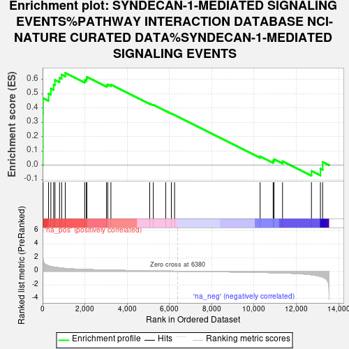
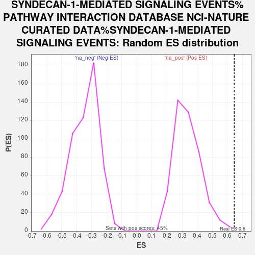

| Dataset | ControlvsDiabete |
| Phenotype | NoPhenotypeAvailable |
| Upregulated in class | na_pos |
| GeneSet | SYNDECAN-1-MEDIATED SIGNALING EVENTS%PATHWAY INTERACTION DATABASE NCI-NATURE CURATED DATA%SYNDECAN-1-MEDIATED SIGNALING EVENTS |
| Enrichment Score (ES) | 0.6458779 |
| Normalized Enrichment Score (NES) | 1.9144273 |
| Nominal p-value | 0.0066815144 |
| FDR q-value | 0.12792718 |
| FWER p-Value | 0.914 |

| SYMBOL | RANK IN GENE LIST | RANK METRIC SCORE | RUNNING ES | CORE ENRICHMENT | |
|---|---|---|---|---|---|
| 1 | COL4A3 | 12 | 2.058 | 0.1276 | Yes |
| 2 | COL11A1 | 16 | 1.921 | 0.2472 | Yes |
| 3 | COL4A4 | 17 | 1.858 | 0.3632 | Yes |
| 4 | MMP7 | 24 | 1.712 | 0.4695 | Yes |
| 5 | COL4A6 | 282 | 0.803 | 0.5006 | Yes |
| 6 | COL6A2 | 392 | 0.690 | 0.5356 | Yes |
| 7 | COL4A5 | 524 | 0.616 | 0.5644 | Yes |
| 8 | COL6A1 | 586 | 0.589 | 0.5967 | Yes |
| 9 | HGF | 802 | 0.501 | 0.6120 | Yes |
| 10 | COL5A2 | 903 | 0.456 | 0.6331 | Yes |
| 11 | COL3A1 | 1075 | 0.408 | 0.6459 | Yes |
| 12 | COL5A1 | 1992 | 0.256 | 0.5941 | No |
| 13 | PPIB | 2072 | 0.247 | 0.6037 | No |
| 14 | MMP9 | 2095 | 0.244 | 0.6173 | No |
| 15 | TGFB1 | 3023 | 0.166 | 0.5591 | No |
| 16 | COL1A2 | 3083 | 0.162 | 0.5649 | No |
| 17 | COL4A1 | 3232 | 0.152 | 0.5634 | No |
| 18 | MAPK3 | 5066 | 0.056 | 0.4314 | No |
| 19 | COL6A3 | 5238 | 0.049 | 0.4218 | No |
| 20 | MAPK1 | 5824 | 0.024 | 0.3801 | No |
| 21 | COL1A1 | 6091 | 0.011 | 0.3611 | No |
| 22 | CASK | 6244 | 0.005 | 0.3502 | No |
| 23 | SDCBP | 10290 | -0.178 | 0.0622 | No |
| 24 | BSG | 10906 | -0.221 | 0.0305 | No |
| 25 | PRKACA | 10947 | -0.225 | 0.0416 | No |
| 26 | LAMA5 | 11350 | -0.261 | 0.0282 | No |
| 27 | CCL5 | 12718 | -0.520 | -0.0404 | No |
| 28 | HPSE | 13142 | -0.766 | -0.0239 | No |
| 29 | MET | 13247 | -0.867 | 0.0226 | No |
